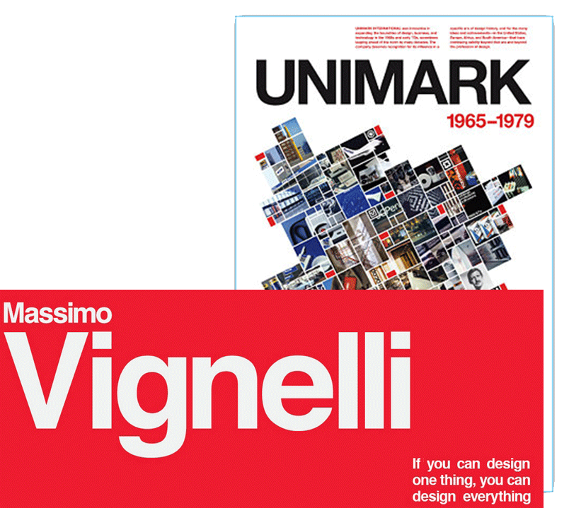

Vignelli was born in Milano, otherwise known as Milan, in Italy. His interest in architecture began from a young age when he was 14, he started to get very intrigued by the idea of architecture. By the time he was 18 he could name all of the most important and influential European architects. He grew up as a modernist, which was someone who is connected with society in a certain way and wanted to improve the situation, he always had a very responsible attitude, trying, whenever he got the chance to make things better.
He lived in Milan after world war II so being an architect at this time gave him a lot to do in regards to the reconstruction of the city. Adolf Loos, a Viennese architect said “An architect should be able to design everything from the spoon to the city” This became Vignelli’s catchphrase, and his passion expanded from just architecture to all of design.
While Vignelli was growing up he was eager to design everything, while he was a student in Venice, Paolo Venini, the owner of Venini glass, offered him the opportunity to design a line of lighting fixtures, he learnt a lot from working with the greatest glass master of his time. A lot of the lamps he created are in museum collections showing off some of his earliest work. At the same time as this, he was also designing books, newspapers and packaging. He also designs a house for a client but found this process too slow and much preferred the graphic design aspect.
In 1948 Vignelli met all the best European architectures at the CIAM (Congres Internationaux d'Architecture Moderne) a lot of his friends of this time went on the become the best architects of today, these included Vittorio Gregotti, Giotto Stoppino, Gae Aulenti and many more. In 1957 he Vignelli was offered a fellowship by Towle Silversmiths, which was a company in Massachusetts. He felt he couldn't pass up this opportunity so his girlfriend at the time and him got married and moved to the so-called promised land. America was the home of his greatest mentor, a man named Charles Eames, a designer of great versatility. when it came to graphic design some of the designers he followed were Paul Rand and Saul Bass.
He spent a year in Newburyport designing nothing but spoons, forms and knives, that constantly kept getting rejected for being too modern, so the following year he and his wife moved to Chicago because he had been offered a teaching position in IIT institute of design. the ended up staying in Chicago for two years. He worked part time also in the deign lab of Container corporation of America, which was a very advanced company in the field of packaging.
In August 1960 Vignelli and his wife had to leave the United States and return to Milan because his visa expired. After being in Chicago fro three years they were both different people, Chicago hadn't widen his perspective, even wider than the vision of some of his colleague from Milan. This was very helpful in his career, he became more noticed and bigger opportunities in terms of work came his way. Later that year Vignelli and his wife opened up a deign office which became very successful. They had very big clientele and did a lot of work in various types of design, they had a very wide horizon of work. They created things like graphics, interiors, packaging and furniture. During those years each project he was refining his idea of design and getting better. He gained a lot of recognition from his friends and colleagues in Milan and gradually abroad too.
Four years later in 1964 Vignelli went back to Chicago and met up with Ralph Eckerstrom and they both thought it would be a good idea to collaborate, so they decided to start up an international design company together. The idea was to join all of the best design companies in every country. He had been talking to a very good dutch designer Bob Noorda about joining their offices for some time now.
At the start of the new year in 1965, Vignelli and Bob arrived in Chicago to start the new international company, after meeting all of the people they would be working with that was when their company Unimark International Corporation for Design and Marketing was born. The growth of Unimark was rapid, they ended up with 11 offices around the world: Chicago, New York, London, Copenhagen, Detroit, San Francesco, Denver, Cleveland, Milan, Johannesburg and Melbourne. Unimark was the first design company to have offices worldwide. Because Vignelli was the founder he was constantly travelling between offices, setting up their interiors and setting up new project guidelines for all of the designers to follow. He believed that all of the offices had to be under strict rules to ensure there was constancy between them all. In time Unimark became one of the best global design companies.
One of my favourite quotes from Vignelli was “If you can't find it, design it” he thought it was important that whenever you were designing something that you would be designing it with the intention of it lasting forever, no point designing something that someone can change in a few years time.
“Ugliness is the byproduct of ignorance, but that's fine because that's what prompts us to change things if we all lived in a perfect world everything would be so damn boring.”
- Massimo Vignelli, Vignelli a to z.
He felt when it came to design it doesn't matter what style you are designing with, as long as you aren't creating junk because there is already too much junk in the world. Trying to deign things that are complex but not complicated is the goal of any designer, but an ignorant mind will design something too complicated without any complexity.
All his life he was trying to make designers responsible professionals, whatever else he achieved through his life that was always his aim. he said good design is all about responsibility and creativity can make the world better.
Vignelli created the new subway map for New York city in 17972, it came into effect and use on the 7th of august 1972 with a lot of hate. The main complaints were that the stations weren't taking the passengers to the correct destinations, or that the colour used to depict water wasn't right or that central park was shown as a rectangle rather than an elongated triangle.
The map was filled with abnormalities, but that was the point, Vignelli wanted to sacrifice geographical accuracy for simplicity, he wanted to change the already complicated map and make it into more of a simple diagram. The premise was to make each station a dot which is linked to its neighbours by colour coded routes all moving at either a 45° or a 90° angle.
A lot of natives to New York were not happy with what the seen interpreting their city, they felt it just wasn't correct, not only for the locals but for tourists coming into the city. In 1979 the M.T.A. (Metropolitan Transportation Authority) finally gave into to the demand and replaced Vignellis Diagram inspired map with a geographical one.
When creating the subway map, Vignelli didn't only create one, he created four, with the ideas that together they would all give the information required. But the M.T.A. only realised one of the maps and it is believed this is why people got confused. In 2011 the M.T.A. introduced “The weekender” which was an interactive version of the subway map and the asked Vignelli to reimagine his 1972 design to create it. He agreed to do this as long as it was called a diagram rather than a map. Vignette died on May 27th, 2014 in Manhattan New York City.
Massimo Vignelli was born in 1931 and trained as an architect in Milan and Venice. He got married to his wife Lella in 1957 just before the two of them moved to Massachusetts and then onto Chicago, before returning to Milan a few years later after his visa expired. He only stayed there for four years though before moving back to the states, this time with not only his wife but a fellow designer and friend Ralph Eckerstrom, where the created the design company Unimark International Corporation for Design and Marketing. After it was set up it eventually became on of the most successful design companies about. It had offices in 11 different countries around the world.
Lastly talking about the subway diagram Vignelli designed and how because not all subway maps were realised the public didn't understand the map as it was supposed to be understood and it got removed. Only later to be semi-introduced again in an interactive online diagram in which Vignelli created himself.